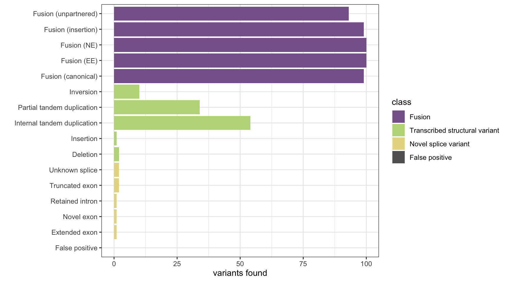
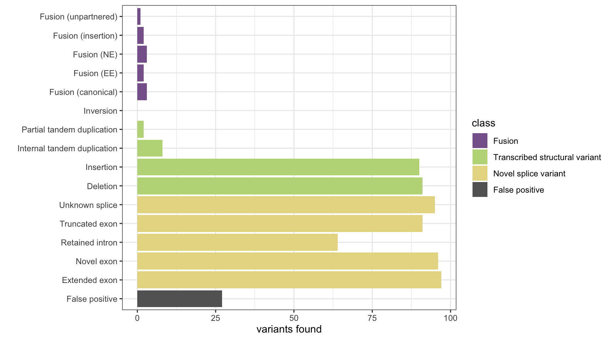
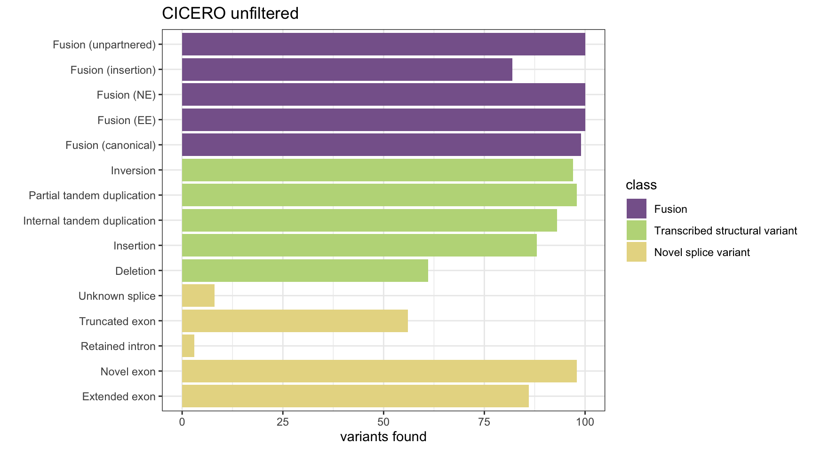
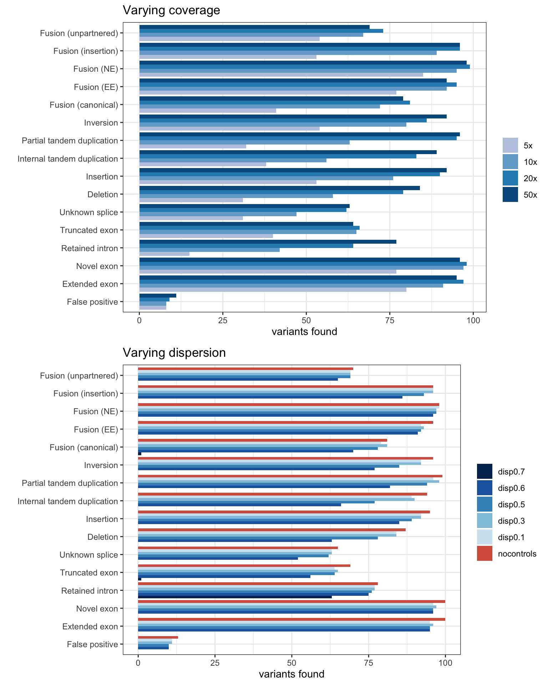
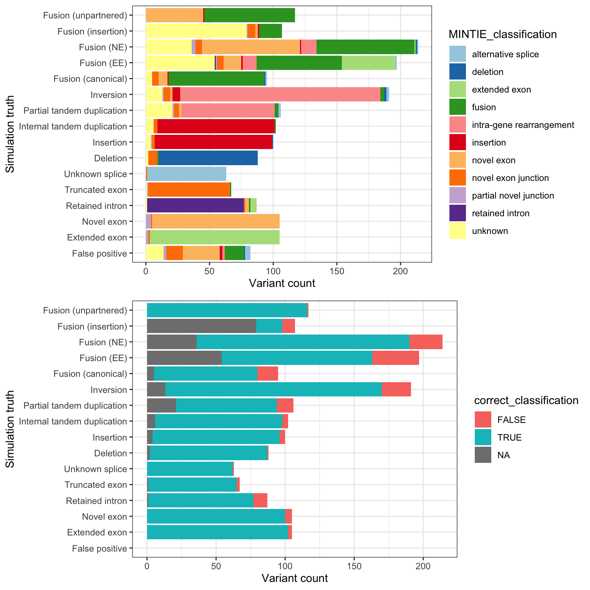

Simulation Benchmarking
Last updated: 2021-05-28
Checks: 7 0
Knit directory: MINTIE-paper-analysis/
This reproducible R Markdown analysis was created with workflowr (version 1.6.2). The Checks tab describes the reproducibility checks that were applied when the results were created. The Past versions tab lists the development history.
Great! Since the R Markdown file has been committed to the Git repository, you know the exact version of the code that produced these results.
Great job! The global environment was empty. Objects defined in the global environment can affect the analysis in your R Markdown file in unknown ways. For reproduciblity it’s best to always run the code in an empty environment.
The command set.seed(20200415) was run prior to running the code in the R Markdown file. Setting a seed ensures that any results that rely on randomness, e.g. subsampling or permutations, are reproducible.
Great job! Recording the operating system, R version, and package versions is critical for reproducibility.
Nice! There were no cached chunks for this analysis, so you can be confident that you successfully produced the results during this run.
Great job! Using relative paths to the files within your workflowr project makes it easier to run your code on other machines.
Great! You are using Git for version control. Tracking code development and connecting the code version to the results is critical for reproducibility.
The results in this page were generated with repository version ed3d2b6. See the Past versions tab to see a history of the changes made to the R Markdown and HTML files.
Note that you need to be careful to ensure that all relevant files for the analysis have been committed to Git prior to generating the results (you can use wflow_publish or wflow_git_commit). workflowr only checks the R Markdown file, but you know if there are other scripts or data files that it depends on. Below is the status of the Git repository when the results were generated:
Ignored files:
Ignored: .DS_Store
Ignored: .Rhistory
Ignored: .Rproj.user/
Ignored: analysis/cache/
Ignored: data/.DS_Store
Ignored: data/RCH_B-ALL/
Ignored: data/leucegene/.DS_Store
Ignored: data/leucegene/KMT2A-PTD_results/.DS_Store
Ignored: data/leucegene/normals_ncontrols_test_results/.DS_Store
Ignored: data/leucegene/normals_ncontrols_test_results/ncon0/.DS_Store
Ignored: data/leucegene/normals_ncontrols_test_results/ncon1/.DS_Store
Ignored: data/leucegene/salmon_out/
Ignored: data/leucegene/sample_info/KMT2A-PTD_8-2.fa.xls
Ignored: data/leucegene/validation_results/.DS_Store
Ignored: data/simu/.DS_Store
Ignored: data/simu/results/.DS_Store
Ignored: data/simu/results/MINTIE/.DS_Store
Ignored: data/simu/results/MINTIE/varying_dispersion/.DS_Store
Ignored: output/Leucegene_gene_counts.tsv
Ignored: packrat/lib-R/
Ignored: packrat/lib-ext/
Ignored: packrat/lib/
Untracked files:
Untracked: data/leucegene/validation_results/TAP/
Unstaged changes:
Modified: .Rprofile
Note that any generated files, e.g. HTML, png, CSS, etc., are not included in this status report because it is ok for generated content to have uncommitted changes.
These are the previous versions of the repository in which changes were made to the R Markdown (analysis/Simulation_Benchmarking.Rmd) and HTML (docs/Simulation_Benchmarking.html) files. If you’ve configured a remote Git repository (see ?wflow_git_remote), click on the hyperlinks in the table below to view the files as they were in that past version.
| File | Version | Author | Date | Message |
|---|---|---|---|---|
| Rmd | ed3d2b6 | Marek Cmero | 2021-05-28 | Figures tweaks and reordering. |
| html | 29ba564 | Marek Cmero | 2021-05-12 | Build site. |
| Rmd | 3aa429f | Marek Cmero | 2021-05-12 | wflow_publish(files = “analysis/Simulation_Benchmarking.Rmd”, |
| Rmd | 0d9b220 | Marek Cmero | 2021-05-12 | Added MINTIE classification accuracy of simulations figure |
| html | 4206f12 | Marek Cmero | 2021-04-30 | Build site. |
| Rmd | 9595530 | Marek Cmero | 2021-04-30 | Updated analyses |
| html | 4b8113e | Marek Cmero | 2020-07-03 | Build site. |
| Rmd | 42ce21b | Marek Cmero | 2020-07-03 | Added CICERO results |
| html | 42ce21b | Marek Cmero | 2020-07-03 | Added CICERO results |
| html | 9141a03 | Marek Cmero | 2020-06-25 | Build site. |
| html | e9e4917 | Marek Cmero | 2020-06-24 | Build site. |
| html | 0b21347 | Marek Cmero | 2020-06-11 | Build site. |
| html | eb3203f | Marek Cmero | 2020-05-27 | Build site. |
| html | 3702862 | Marek Cmero | 2020-05-18 | Removed MLM samples from final B-ALL results |
| Rmd | 36880a4 | Marek Cmero | 2020-05-12 | Fixed capitalisation for file paths. Added B-ALLs link to site. |
| html | a166ab8 | Marek Cmero | 2020-05-08 | Build site. |
| html | a600688 | Marek Cmero | 2020-05-07 | Build site. |
| html | 5c045b5 | Marek Cmero | 2020-05-07 | Build site. |
| html | 90c7fd9 | Marek Cmero | 2020-05-06 | Build site. |
| html | 358aa53 | Marek Cmero | 2020-05-04 | Build site. |
| Rmd | 453d754 | Marek Cmero | 2020-05-04 | Added controls comparison in normals analysis. Added variant class collation function. Added variant summary for |
| html | 4a5d6ae | Marek Cmero | 2020-05-01 | Build site. |
| html | 3c9c389 | Marek Cmero | 2020-04-30 | Added missing files from workflowr build |
| html | 784838b | Marek Cmero | 2020-04-30 | Build site. |
| Rmd | c4c3844 | Marek Cmero | 2020-04-30 | Added leucegene gene expression notebook |
| html | 14a7a7b | Marek Cmero | 2020-04-27 | Update index |
| html | 535d418 | Marek Cmero | 2020-04-27 | Added missing figures |
| html | 6a17444 | Marek Cmero | 2020-04-27 | Build site. |
| Rmd | 3fa0082 | Marek Cmero | 2020-04-27 | Fixed subject/query bugs in get_hits functions. Fixed background gene numbers. Added hg19 coords to truth file. |
| html | 3fa0082 | Marek Cmero | 2020-04-27 | Fixed subject/query bugs in get_hits functions. Fixed background gene numbers. Added hg19 coords to truth file. |
| html | 663689c | Marek Cmero | 2020-04-23 | Build site. |
| Rmd | e57763b | Marek Cmero | 2020-04-23 | Initial commit |
| html | e57763b | Marek Cmero | 2020-04-23 | Initial commit |
# util
library(data.table)
library(dplyr)
library(stringr)
library(here)
library(reshape2)
# plotting
library(ggplot2)
library(RColorBrewer)
library(gridExtra)
# bioinformatics helpers
library(GenomicRanges)
library(Rsamtools)source(here("code/simu_helper.R"))
source(here("code/leucegene_helper.R"))
source(here("code/plot.R"))options(stringsAsFactors = FALSE)Simulation Benchmarking
Here we analyse the results on a simulated data set of 1,500 variants containing fusions, transcribed structural variants and novel splice variants, across 8 methods: MINTIE, TAP, Barnacle, SQUID, JAFFA, Arriba, StringTie and KisSplice.
The plots show the number of variants detected from each category and the number of false positives. The number of background genes detected in the false positives in displayed as printed output.
fus_truth <- read.delim(here("data/simu/truth/allvars_fusions_simulated.tsv"))
tsv_nsv_truth <- read.delim(here("data/simu/truth/allvars_tsvs_splice_simulated.tsv"))
all_gene_locs <- read.delim(gzfile(here("data/ref/all_gene_locs.tsv.gz")))
bg_gene_ref <- read.delim(here("data/simu/truth/bg_gene_ref.tsv"))
# extract truth and background gene names
var_genes_truth <- unique(c(fus_truth$gene1, fus_truth$gene2, tsv_nsv_truth$gene))
var_genes_truth <- var_genes_truth[var_genes_truth != ""]
bg_genes <- bg_gene_ref$gene
# make Genomic Ranges objects from data
fus_grx <- get_granges(fus_truth)
tsv_nsv_grx <- get_granges(tsv_nsv_truth)
bgenes_grx <- get_granges(bg_gene_ref, convert_chrom = TRUE, add_chr = FALSE)
all_gene_grx <- get_granges(all_gene_locs, convert_chrom = TRUE, add_chr = FALSE)
# create results object
nsv_names <- c("Extended exon",
"Novel exon",
"Retained intron",
"Truncated exon",
"Unknown splice")
tsv_names <- c("Deletion",
"Insertion",
"Internal tandem duplication",
"Partial tandem duplication",
"Inversion")
fus_names <- c("Fusion (canonical)",
"Fusion (EE)",
"Fusion (NE)",
"Fusion (insertion)",
"Fusion (unpartnered)")
vartypes <- c("False positive", nsv_names, tsv_names, fus_names)
classes <- c("False positive",
"Novel splice variant",
"Transcribed structural variant",
"Fusion")
results <- data.frame(vartype = factor(vartypes, levels = vartypes),
class = factor(c(classes[1], rep(classes[2:4], each=5)),
levels = classes[4:1]),
row.names = c("FP", "EE", "NE", "RI", "NEJ", "US",
"DEL", "INS", "ITD", "PTD", "INV",
"canonical_fusion", "EE_fusion",
"NE_fusion", "INS_fusion", "unpartnered_fusion"))
cols <- c("#87649aff", "#bdd888ff", "#e7d992ff", "#636363")
names(cols) <- c("Fusion", "Transcribed structural variant", "Novel splice variant", "False positive")MINTIE
# load data
mintie_results <- read.delim(here("data/simu/results/MINTIE/allvars-case_results.tsv.gz"))
mintie_results <- mintie_results[mintie_results$logFC > 5,]
# extract genes
mintie_vargenes <- sapply(mintie_results$overlapping_genes, function(x){strsplit(x, "\\||:")[[1]]})
mvg <- unlist(mintie_vargenes)
mvg <- mvg[mvg != ""]
# count found fusions, TSVs and NSVs
found_fus <- table(fus_truth$fusion_type[fus_truth$gene1 %in% mvg | fus_truth$gene2 %in% mvg])
found_tsv <- table(tsv_nsv_truth$vartype[tsv_nsv_truth$gene %in% mvg])
# count false positives genes
fp <- sapply(mintie_vargenes, function(x){!any(x %in% var_genes_truth)})
fp_genes <- unlist(sapply(mintie_results$overlapping_genes[fp], function(x){strsplit(x, "\\||:")}))
fp_genes <- fp_genes[fp_genes != ""]
n_fp <- length(unique(fp_genes))
results <- base_results <- append_results(results, "MINTIE", found_fus, found_tsv, n_fp)
print(paste("Background genes in FPs:", sum(unique(fp_genes) %in% bg_genes)))[1] "Background genes in FPs: 0"plot_simu_benchmarking(results, "MINTIE")
| Version | Author | Date |
|---|---|---|
| 4206f12 | Marek Cmero | 2021-04-30 |
| 9141a03 | Marek Cmero | 2020-06-25 |
| 0b21347 | Marek Cmero | 2020-06-11 |
| eb3203f | Marek Cmero | 2020-05-27 |
| 3702862 | Marek Cmero | 2020-05-18 |
| db62be7 | Marek Cmero | 2020-05-01 |
| 4a5d6ae | Marek Cmero | 2020-05-01 |
| 3c9c389 | Marek Cmero | 2020-04-30 |
| 784838b | Marek Cmero | 2020-04-30 |
| 535d418 | Marek Cmero | 2020-04-27 |
| 6a17444 | Marek Cmero | 2020-04-27 |
| 1096df5 | Marek Cmero | 2020-04-24 |
TAP
# load result data
tap_svs <- read.delim(here("data/simu/results/TAP/sv.bedpe"), sep = "\t", skip = 2)
tap_nsv <- read.delim(here("data/simu/results/TAP/novel_splicing.bedpe"), sep = "\t", skip = 2)
# extract variant genes
tap_vargenes <- Reduce(union, list(tap_svs$gene1, tap_svs$gene2, tap_nsv$gene))
tap_vargenes <- tap_vargenes[tap_vargenes != ""]
# count found fusions, TSVs and NSVs
found_fus <- table(fus_truth$fusion_type[fus_truth$gene1 %in% tap_vargenes | fus_truth$gene2 %in% tap_vargenes])
found_tsv <- table(tsv_nsv_truth$vartype[tsv_nsv_truth$gene %in% tap_vargenes])
# count false positives genes
fp_svs <- tap_svs[!tap_svs$gene1 %in% var_genes_truth & !tap_svs$gene2 %in% var_genes_truth,]
fp_nsv <- tap_nsv[!tap_nsv$gene1 %in% var_genes_truth & !tap_nsv$gene2 %in% var_genes_truth,]
fp_genes <- unique(c(fp_svs$gene1, fp_svs$gene2, fp_nsv$gene1, fp_nsv$gene2))
n_fp <- length(fp_genes)
results <- append_results(results, "TAP", found_fus, found_tsv, n_fp)
print(paste("Background genes in FPs:", sum(fp_genes %in% bg_genes)))[1] "Background genes in FPs: 2"plot_simu_benchmarking(results, "TAP")
| Version | Author | Date |
|---|---|---|
| 4206f12 | Marek Cmero | 2021-04-30 |
| 0b21347 | Marek Cmero | 2020-06-11 |
| eb3203f | Marek Cmero | 2020-05-27 |
| 3702862 | Marek Cmero | 2020-05-18 |
| db62be7 | Marek Cmero | 2020-05-01 |
| 4a5d6ae | Marek Cmero | 2020-05-01 |
| 3c9c389 | Marek Cmero | 2020-04-30 |
| 784838b | Marek Cmero | 2020-04-30 |
| 535d418 | Marek Cmero | 2020-04-27 |
| 6a17444 | Marek Cmero | 2020-04-27 |
| 3fa0082 | Marek Cmero | 2020-04-27 |
| 1096df5 | Marek Cmero | 2020-04-24 |
Barnacle
# build hg19 version of truth data
# fusions
hg19_fus_truth <- fus_truth
hg19_fus_truth$loc1 <- hg19_fus_truth$hg19_loc1
hg19_fus_truth$loc2 <- hg19_fus_truth$hg19_loc2
hg19_fus_truth$loc1[hg19_fus_truth$loc1 == ""] <- "chrZ:1-2" #dummy record for blanks
hg19_fus_truth$loc2[hg19_fus_truth$loc2 == ""] <- "chrZ:1-2"
# TSVs/NSVs
hg19_tsv_nsv_truth <- tsv_nsv_truth
hg19_tsv_nsv_truth$loc <- hg19_tsv_nsv_truth$hg19_loc
hg19_tsv_nsv_truth$loc[hg19_tsv_nsv_truth$loc == ""] <- "chrZ:1-2"
# make Genomic Ranges objects
hg19_fus_grx <- get_granges(hg19_fus_truth, convert_chrom = FALSE)
hg19_tsv_nsv_grx <- get_granges(hg19_tsv_nsv_truth, convert_chrom = FALSE)
hg19_bg_gene_ref <- read.delim(here("data/simu/truth/hg19_bg_gene_ref.tsv"))
hg19_bgenes_grx <- get_granges(bg_gene_ref, convert_chrom = FALSE)
# load barnacle results and make Genomic Ranges objects
barnacle_results <- read.delim(here("data/simu/results/Barnacle/allvars-case.barnacle.data"), header=FALSE)$V1
barnacle_results <- barnacle_results[grep("OVERLAPPING", barnacle_results)]
barnacle_grx_a <- get_barnacle_grx(barnacle_results)
barnacle_grx_b <- get_barnacle_grx(barnacle_results, side_A = FALSE)
# extract hits
hits <- get_hits(barnacle_grx_a, barnacle_grx_b,
hg19_fus_grx[[1]], hg19_fus_grx[[2]],
hg19_tsv_nsv_grx, hg19_bgenes_grx)
found_fus <- table(hg19_fus_truth[hits$fus_truth_hits,]$fusion_type)
found_tsv <- table(hg19_tsv_nsv_truth[hits$tsv_nsv_truth_hits,]$vartype)
fps <- !1:length(barnacle_grx_a) %in% unique(hits$caller_hits)
n_fp <- sum(fps)
results <- append_results(results, "Barnacle", found_fus, found_tsv, n_fp)
print(paste("Background genes in FPs:", sum(hits$bg_hits %in% which(fps))))[1] "Background genes in FPs: 3"plot_simu_benchmarking(results, "Barnacle")
| Version | Author | Date |
|---|---|---|
| 4206f12 | Marek Cmero | 2021-04-30 |
| 0b21347 | Marek Cmero | 2020-06-11 |
| eb3203f | Marek Cmero | 2020-05-27 |
| 3702862 | Marek Cmero | 2020-05-18 |
| db62be7 | Marek Cmero | 2020-05-01 |
| 4a5d6ae | Marek Cmero | 2020-05-01 |
| 3c9c389 | Marek Cmero | 2020-04-30 |
| 784838b | Marek Cmero | 2020-04-30 |
| 535d418 | Marek Cmero | 2020-04-27 |
| 6a17444 | Marek Cmero | 2020-04-27 |
| 3fa0082 | Marek Cmero | 2020-04-27 |
| 1096df5 | Marek Cmero | 2020-04-24 |
SQUID
# load data
squid_results <- read.delim(here("data/simu/results/SQUID/results_sv.txt"))
# make GRanges objects
chr1 <- sapply(squid_results$X..chrom1, convert_chrom, add_chr=FALSE)
loc1_grx <- GRanges(seqnames = chr1,
ranges = IRanges(start = squid_results$start1, end = squid_results$end1))
chr2 <- sapply(squid_results$chrom2, convert_chrom, add_chr=FALSE)
loc2_grx <- GRanges(seqnames = chr2,
ranges = IRanges(start = squid_results$start2, end = squid_results$end2))
# get hits
hits <- get_hits(loc1_grx, loc2_grx, fus_grx[[1]], fus_grx[[2]], tsv_nsv_grx, bgenes_grx)
found_fus <- table(fus_truth[hits$fus_truth_hits,]$fusion_type)
found_tsv <- table(tsv_nsv_truth[hits$tsv_nsv_truth_hits,]$vartype)
# get false positives
fps <- squid_results[!1:nrow(squid_results) %in% hits$caller_hits,]
fps <- fps[!(fps$X..chrom1 %like% "alt" | fps$chrom2 %like% "alt"),]
n_fp <- nrow(fps)
results <- append_results(results, "SQUID", found_fus, found_tsv, n_fp)
print(paste("Background genes in FPs:", sum(hits$bg_hits %in% as.numeric(rownames(fps)))))[1] "Background genes in FPs: 0"plot_simu_benchmarking(results, "SQUID")
| Version | Author | Date |
|---|---|---|
| 4206f12 | Marek Cmero | 2021-04-30 |
| 0b21347 | Marek Cmero | 2020-06-11 |
| eb3203f | Marek Cmero | 2020-05-27 |
| 3702862 | Marek Cmero | 2020-05-18 |
| db62be7 | Marek Cmero | 2020-05-01 |
| 4a5d6ae | Marek Cmero | 2020-05-01 |
| 3c9c389 | Marek Cmero | 2020-04-30 |
| 784838b | Marek Cmero | 2020-04-30 |
| 535d418 | Marek Cmero | 2020-04-27 |
| 6a17444 | Marek Cmero | 2020-04-27 |
| 3fa0082 | Marek Cmero | 2020-04-27 |
| 1096df5 | Marek Cmero | 2020-04-24 |
JAFFA
# load data
jaffa_results <- read.delim(here("data/simu/results/JAFFA/jaffa_results.csv"), sep = ",")
# make GRanges objects
chr1 <- sapply(jaffa_results$chrom1, convert_chrom, add_chr=FALSE)
loc1_grx <- GRanges(seqnames = chr1,
ranges = IRanges(start = jaffa_results$base1, end = jaffa_results$base1))
chr2 <- sapply(jaffa_results$chrom1, convert_chrom, add_chr=FALSE)
loc2_grx <- GRanges(seqnames = chr2,
ranges = IRanges(start = jaffa_results$base2, end = jaffa_results$base2))
# get hits
hits <- get_hits(loc1_grx, loc2_grx, fus_grx[[1]], fus_grx[[2]], tsv_nsv_grx, bgenes_grx)
found_fus <- table(fus_truth[hits$fus_truth_hits,]$fusion_type)
found_tsv <- table(tsv_nsv_truth[hits$tsv_nsv_truth_hits,]$vartype)
# get false positives
fps <- jaffa_results[!rownames(jaffa_results) %in% hits$caller_hits,]
fps <- fps[!(fps$chrom1 %like% "alt" | fps$chrom2 %like% "alt"),]
fp_genes <- unlist(sapply(fps$fusion.genes, strsplit, split=":"))
n_fp <- length(unique(fp_genes))
results <- append_results(results, "JAFFA", found_fus, found_tsv, n_fp)
print(paste("Background genes in FPs:", sum(hits$bg_hits %in% as.numeric(rownames(fps)))))[1] "Background genes in FPs: 0"plot_simu_benchmarking(results, "JAFFA")
| Version | Author | Date |
|---|---|---|
| 4206f12 | Marek Cmero | 2021-04-30 |
| 0b21347 | Marek Cmero | 2020-06-11 |
| eb3203f | Marek Cmero | 2020-05-27 |
| 3702862 | Marek Cmero | 2020-05-18 |
| db62be7 | Marek Cmero | 2020-05-01 |
| 4a5d6ae | Marek Cmero | 2020-05-01 |
| 3c9c389 | Marek Cmero | 2020-04-30 |
| 784838b | Marek Cmero | 2020-04-30 |
| 535d418 | Marek Cmero | 2020-04-27 |
| 6a17444 | Marek Cmero | 2020-04-27 |
| 3fa0082 | Marek Cmero | 2020-04-27 |
| 1096df5 | Marek Cmero | 2020-04-24 |
Arriba
# load data
arriba_results <- read.delim(here("data/simu/results/Arriba/fusions.tsv"))
# extract variasnt genes
arriba_vargenes1 <- sapply(arriba_results$X.gene1, get_arriba_genes)
arriba_vargenes2 <- sapply(arriba_results$gene2, get_arriba_genes)
avg <- unlist(list(arriba_vargenes1, arriba_vargenes2))
avg <- avg[avg != ""]
# tally results
found_tsv <- table(tsv_nsv_truth[tsv_nsv_truth$gene %in% avg,]$vartype)
found_fus <- table(fus_truth[fus_truth$gene1 %in% avg | fus_truth$gene2 %in% avg,]$fusion_type)
# get false positives
fp1 <- sapply(arriba_vargenes1, function(x){!any(x %in% var_genes_truth)})
fp2 <- sapply(arriba_vargenes2, function(x){!any(x %in% var_genes_truth)})
fp_genes1 <- arriba_vargenes1[fp1 & fp2]
fp_genes2 <- arriba_vargenes2[fp1 & fp2]
fp_genes <- unique(union(fp_genes1, fp_genes2))
n_fp <- length(fp_genes)
results <- append_results(results, "Arriba", found_fus, found_tsv, n_fp)
print(paste("Background genes in FPs:", sum(fp_genes%in% bgenes_grx$genes)))[1] "Background genes in FPs: 0"plot_simu_benchmarking(results, "Arriba")
| Version | Author | Date |
|---|---|---|
| 4206f12 | Marek Cmero | 2021-04-30 |
| 0b21347 | Marek Cmero | 2020-06-11 |
| eb3203f | Marek Cmero | 2020-05-27 |
| 3702862 | Marek Cmero | 2020-05-18 |
| db62be7 | Marek Cmero | 2020-05-01 |
| 4a5d6ae | Marek Cmero | 2020-05-01 |
| 3c9c389 | Marek Cmero | 2020-04-30 |
| 784838b | Marek Cmero | 2020-04-30 |
| 535d418 | Marek Cmero | 2020-04-27 |
| 6a17444 | Marek Cmero | 2020-04-27 |
| 1096df5 | Marek Cmero | 2020-04-24 |
StringTie
# load data and extract transcripts marked as novel
stringtie_results <- read.delim(here("data/simu/results/StringTie/fullsimu.gtf"), comment="#", header=F)
stringtie_results <- stringtie_results[!stringtie_results$V9 %like% "ref_gene_id",]
stringtie_results <- stringtie_results[stringtie_results$V3 == "transcript",]
chrom <- sapply(stringtie_results$V1, convert_chrom, add_chr = FALSE)
stringtie_grx <- GRanges(seqnames = chrom,
ranges = IRanges(start = stringtie_results$V4,
end = stringtie_results$V5))
hits <- get_hits_oneloc(stringtie_grx, fus_grx[[1]], fus_grx[[2]], tsv_nsv_grx, bgenes_grx)
found_fus <- table(fus_truth[hits$fus_truth_hits,]$fusion_type)
found_tsv <- table(tsv_nsv_truth[hits$tsv_nsv_truth_hits,]$vartype)
# get false positives
fp_grx <- stringtie_grx[!1:length(hits$caller_hits) %in% hits$caller_hits]
fp_gene_hits <- all_gene_grx[subjectHits(findOverlaps(fp_grx, all_gene_grx))]
n_fp <- length(unique(fp_gene_hits$genes))
results <- append_results(results, "StringTie", found_fus, found_tsv, n_fp)
print(paste("Background genes in FPs:", sum(unique(fp_gene_hits$genes) %in% bgenes_grx$genes)))[1] "Background genes in FPs: 1"plot_simu_benchmarking(results, "StringTie")
| Version | Author | Date |
|---|---|---|
| 4206f12 | Marek Cmero | 2021-04-30 |
| 0b21347 | Marek Cmero | 2020-06-11 |
| eb3203f | Marek Cmero | 2020-05-27 |
| 3702862 | Marek Cmero | 2020-05-18 |
| db62be7 | Marek Cmero | 2020-05-01 |
| 4a5d6ae | Marek Cmero | 2020-05-01 |
| 3c9c389 | Marek Cmero | 2020-04-30 |
| 784838b | Marek Cmero | 2020-04-30 |
| 535d418 | Marek Cmero | 2020-04-27 |
| 6a17444 | Marek Cmero | 2020-04-27 |
| 3fa0082 | Marek Cmero | 2020-04-27 |
| 1096df5 | Marek Cmero | 2020-04-24 |
KisSplice
# regenerate gene ranges objects "chr" prefix
# (this is required as KisSplice"s bam was aligned
# to a genome with chr prefixes)
fus_grx <- get_granges(fus_truth, convert_chrom = TRUE)
tsv_nsv_grx <- get_granges(tsv_nsv_truth, convert_chrom = TRUE)
bgenes_grx <- get_granges(bg_gene_ref, convert_chrom = FALSE)
# extract hits im fusion and TSV/NSV gene regions
bam <- here("data/simu/results/KisSplice/results.bam")
fus1_hits <- get_kissplice_hits(bam, fus_grx[[1]])
fus2_hits <- get_kissplice_hits(bam, fus_grx[[2]])
tsv_nsv_hits <- get_kissplice_hits(bam, tsv_nsv_grx)
# remame row names to match locations from results
rownames(fus_truth) <- sapply(fus_truth$loc1, convert_chrom)
rownames(tsv_nsv_truth) <- sapply(tsv_nsv_truth$loc, convert_chrom)
# tally results
found_fus <- table(fus_truth[names(fus1_hits)[fus1_hits | fus2_hits],]$fusion_type)
found_tsv <- table(tsv_nsv_truth[names(tsv_nsv_hits[tsv_nsv_hits]),]$vartype)
# count number of FP hits in background genes
# first, get all reads that we counted as "hits"
param <- ScanBamParam(which = c(fus_grx[[1]], fus_grx[[2]], tsv_nsv_grx),
what = c("pos"))
all_hits <- scanBam(bam, param = param)
all_hits <- unique(unlist(all_hits))
# now get all reads in the results and count all
# reads that were not counted as hits
param <- ScanBamParam(what = "pos")
all_results <- unique(scanBam(bam, param = param)[[1]]$pos)
fps <- all_results[!all_results %in% all_hits]
n_fp <- length(fps)
# count the numner of FPs in background genes
param <- ScanBamParam(which = bgenes_grx, what = c("pos"))
bg_hits <- scanBam(bam, param = param)
bg_hits <- bg_hits[as.numeric(bg_hits) %in% fps]
results <- append_results(results, "KisSplice", found_fus, found_tsv, n_fp)
print(paste("Background genes in FPs:", length(bg_hits)))[1] "Background genes in FPs: 0"plot_simu_benchmarking(results, "KisSplice")
| Version | Author | Date |
|---|---|---|
| 4206f12 | Marek Cmero | 2021-04-30 |
| 0b21347 | Marek Cmero | 2020-06-11 |
| eb3203f | Marek Cmero | 2020-05-27 |
| 3702862 | Marek Cmero | 2020-05-18 |
| db62be7 | Marek Cmero | 2020-05-01 |
| 4a5d6ae | Marek Cmero | 2020-05-01 |
| 3c9c389 | Marek Cmero | 2020-04-30 |
| 784838b | Marek Cmero | 2020-04-30 |
| 535d418 | Marek Cmero | 2020-04-27 |
| 6a17444 | Marek Cmero | 2020-04-27 |
| 1096df5 | Marek Cmero | 2020-04-24 |
CICERO
# load CICERO results and make Genomic Ranges objects
cicero_results <- read.delim(here("data/simu/results/CICERO/allvars-case.final_fusions.txt"))
# make GRanges objects
loc1_grx <- GRanges(seqnames = cicero_results$chrA,
ranges = IRanges(start = cicero_results$posA, end = cicero_results$posA))
loc2_grx <- GRanges(seqnames = cicero_results$chrB,
ranges = IRanges(start = cicero_results$posB, end = cicero_results$posB))
# extract hits
hits <- get_hits(loc1_grx, loc2_grx,
hg19_fus_grx[[1]], hg19_fus_grx[[2]],
hg19_tsv_nsv_grx, hg19_bgenes_grx)
found_fus <- table(hg19_fus_truth[hits$fus_truth_hits,]$fusion_type)
found_tsv <- table(hg19_tsv_nsv_truth[hits$tsv_nsv_truth_hits,]$vartype)
fps <- !1:length(loc1_grx) %in% unique(hits$caller_hits)
n_fp <- sum(fps)
results <- append_results(results, "CICERO", found_fus, found_tsv, n_fp)
print(paste("Background genes in FPs:", sum(hits$bg_hits %in% which(fps))))[1] "Background genes in FPs: 1"plot_simu_benchmarking(results, "CICERO")
Unfiltered CICERO results (Supplementary Figure 3).
# load CICERO unfiltered results and make Genomic Ranges objects
cicero_int <- read.delim(here("data/simu/results/CICERO/unfiltered.internal.txt"), header = FALSE)
cicero_fus <- read.delim(here("data/simu/results/CICERO/unfiltered.fusion.txt"), header = FALSE)
# make GRanges objects
loc_grx <- GRanges(seqnames = c(cicero_int$V9, cicero_int$V20),
ranges = IRanges(start = c(cicero_int$V10, cicero_int$V21),
end = c(cicero_int$V11, cicero_int$V22)))
loc1_grx <- GRanges(seqnames = cicero_fus$V9,
ranges = IRanges(start = cicero_fus$V10, end = cicero_fus$V11))
loc2_grx <- GRanges(seqnames = cicero_fus$V20,
ranges = IRanges(start = cicero_fus$V21, end = cicero_fus$V22))
# get hits for both internal and fus variants
hits_int <- get_hits_oneloc(loc_grx, fus_grx[[1]], fus_grx[[2]],
hg19_tsv_nsv_grx, bgenes_grx)
hits_fus <- get_hits(loc1_grx, loc2_grx,
hg19_fus_grx[[1]], hg19_fus_grx[[2]],
hg19_tsv_nsv_grx, bgenes_grx)
fps_int <- !1:length(loc_grx) %in% hits_int$caller_hits
fps_fus <- !1:length(loc1_grx) %in% hits_fus$caller_hits
n_fp <- sum(fps_int) + sum(fps_fus)
# count hits
fus_truth_hits <- union(hits_int$fus_truth_hits, hits_fus$fus_truth_hits)
tsv_truth_hits <- union(hits_int$tsv_nsv_truth_hits, hits_fus$tsv_nsv_truth_hits)
found_fus <- table(hg19_fus_truth[fus_truth_hits,]$fusion_type)
found_tsv <- table(hg19_tsv_nsv_truth[tsv_truth_hits,]$vartype)
cicero_results <- append_results(results[, 1:2], "CICERO", found_fus, found_tsv, n_fp)
plot_simu_benchmarking(cicero_results[!rownames(results) %in% "FP",], "CICERO") +
ylim(0, 100) + ggtitle("CICERO unfiltered")
print(paste("False positives:", n_fp))[1] "False positives: 596"All results
MINTIE paper Figure 3A containing results from all benchmarked methods.
mr <- reshape2::melt(results, id.vars = c("vartype", "class"), variable.name = "method")
mr$method <- factor(mr$method,
levels=c("MINTIE", "TAP", "Barnacle",
"SQUID", "JAFFA", "Arriba",
"CICERO", "KisSplice", "StringTie"))
plot_all_simu_benchmarks(mr)
| Version | Author | Date |
|---|---|---|
| 4206f12 | Marek Cmero | 2021-04-30 |
| 42ce21b | Marek Cmero | 2020-07-03 |
| 9141a03 | Marek Cmero | 2020-06-25 |
| 0b21347 | Marek Cmero | 2020-06-11 |
| eb3203f | Marek Cmero | 2020-05-27 |
| 3702862 | Marek Cmero | 2020-05-18 |
| db62be7 | Marek Cmero | 2020-05-01 |
| 4a5d6ae | Marek Cmero | 2020-05-01 |
| 3c9c389 | Marek Cmero | 2020-04-30 |
| 784838b | Marek Cmero | 2020-04-30 |
| 535d418 | Marek Cmero | 2020-04-27 |
| 6a17444 | Marek Cmero | 2020-04-27 |
| 3fa0082 | Marek Cmero | 2020-04-27 |
| 1096df5 | Marek Cmero | 2020-04-24 |
Coverage & Dispersion experiments
MINTIE Supplementary Figure 1 showing effect of coverage and dispersion on results.
cresults <- base_results
colnames(cresults)[3] <- "50x" # original results are 50x variant coverage
coverage_dir <- here("data/simu/results/MINTIE/varying_coverage/")
cresults <- get_experiment_results(cresults, coverage_dir)
# melt data and plot
experiments <- c("5x", "10x", "20x", "50x")
ccols <- brewer.pal(5, "PuBu")[2:5]
names(ccols) <- experiments
tcov <- reshape2::melt(data.table(cresults),
id.vars = c("vartype", "class"),
variable.name = "variant coverage")
tcov$`variant coverage` <- factor(tcov$`variant coverage`, levels=experiments)
pcov <- ggplot(tcov, aes(vartype, value, group = `variant coverage`, fill = `variant coverage`)) +
geom_bar(stat="identity", position="dodge") +
theme_bw() +
theme(axis.text.x = element_text()) +
ylab("variants found") +
xlab("") +
coord_flip() +
theme(legend.position = "right", legend.title = element_blank()) +
scale_fill_manual(values = ccols) +
ggtitle("Varying coverage")dresults <- base_results
colnames(dresults)[3] <- "disp0.1" # original results are 50x variant coverage
coverage_dir <- here("data/simu/results/MINTIE/varying_dispersion/")
dresults <- get_experiment_results(dresults, coverage_dir)
# melt data and plot
experiments <- c("disp0.7", "disp0.6", "disp0.5", "disp0.3", "disp0.1", "nocontrols")
dcols <- rev(brewer.pal(10, "RdBu")[c(3, 6:10)])
names(dcols) <- experiments
ddis <- reshape2::melt(data.table(dresults),
id.vars = c("vartype", "class"),
variable.name = "dispersion")
ddis$dispersion <- factor(ddis$dispersion, levels=experiments)
pdis <- ggplot(ddis, aes(vartype, value, group = dispersion, fill = dispersion)) +
geom_bar(stat="identity", position="dodge") +
theme_bw() +
theme(axis.text.x = element_text()) +
ylab("variants found") +
xlab("") +
coord_flip() +
theme(legend.position = "right", legend.title = element_blank()) +
scale_fill_manual(values = dcols) +
ggtitle("Varying dispersion")grid.arrange(pcov, pdis, ncol=1)
| Version | Author | Date |
|---|---|---|
| 4206f12 | Marek Cmero | 2021-04-30 |
Detection limit experiment results
MINTIE Supplementary Figure 2 showing detection rates at variant sizes 1-9 for small variants (insertions, deletions and ITDs).
# load experimental data
dlim_dir <- here("data/simu/results/MINTIE/detection_limits/")
dlim_truth <- read.delim(here("data/simu/truth/limvars1_tsvs_splice_simulated.tsv.gz"))
# (note, we use the same truth set for all simulations, this is because they vary by varsize only)
plausible_vartype <- c("IGR", "INS", "DEL", "NEJ", "UN")
dlim_results <- list.files(dlim_dir, pattern = "*results.tsv.gz", full.names = TRUE) %>%
lapply(., read.delim) %>%
rbindlist() %>%
get_results_by_gene() %>%
filter(variant_type %in% plausible_vartype)
# check whether variant was detected in each run
for(i in seq(1, 9)) {
sample_name <- paste0("limvars", i, "-case")
lvg <- dlim_results$gene[dlim_results$sample %in% sample_name] %>% unique()
dlim_truth$detected <- dlim_truth$gene %in% lvg
colnames(dlim_truth)[ncol(dlim_truth)] <- i
}
# melt data and plot
lm <- dlim_truth[, !colnames(dlim_truth) %like% "tx|gene|size|exon"] %>%
melt(id.vars = c("loc", "vartype"), variable.name = "size", value.name = "detected")
ggplot(lm, aes(size, fill = detected)) +
geom_bar(stat = "count") +
theme_bw() + facet_grid(~vartype)
| Version | Author | Date |
|---|---|---|
| 4206f12 | Marek Cmero | 2021-04-30 |
Classification accuracy
Figure 3B, shows whether MINTIE’s classifications match the simulated categories.
longform_categories <- c("AS" = "alternative splice",
"DEL" = "deletion",
"EE" = "extended exon",
"FUS" = "fusion",
"IGR" = "intra-gene rearrangement",
"INS" = "insertion",
"NE" = "novel exon",
"NEJ" = "novel exon junction",
"PNJ" = "partial novel junction",
"RI" = "retained intron",
"UN" = "unknown")
mclass <- get_results_by_gene(mintie_results)
mclass$truth_vartype <- sapply(mclass$gene, get_vartype_from_gene, fus_truth, tsv_nsv_truth)
mclass$truth_vartype_full <- results[mclass$truth_vartype,]$vartype
mclass <- distinct(mclass[,c("chr1", "pos1", "strand1",
"chr2", "pos2", "strand2",
"variant_type", "truth_vartype",
"truth_vartype_full")])
mclass$correct_classification <- apply(mclass, 1, is_classification_correct)
mclass$MINTIE_classification <- mclass$variant_type
mclass$truth_vartype_full <- as.factor(mclass$truth_vartype_full)
g1 <- ggplot(mclass, aes(truth_vartype_full, fill = MINTIE_classification)) +
geom_bar() +
coord_flip() +
theme_bw() +
ylab("Variant count") +
xlab("Simulation truth") +
scale_fill_brewer(palette = "Paired",
labels = as.character(longform_categories))
g2 <- ggplot(mclass[mclass$truth_vartype != "FP",],
aes(truth_vartype_full, fill = correct_classification)) +
geom_bar() +
coord_flip() +
ylab("Variant count") +
xlab("Simulation truth") +
theme_bw() +
scale_x_discrete(drop=FALSE)
grid.arrange(g1, g2, nrow = 2)
| Version | Author | Date |
|---|---|---|
| 29ba564 | Marek Cmero | 2021-05-12 |
sessionInfo()R version 4.0.3 (2020-10-10)
Platform: x86_64-apple-darwin17.0 (64-bit)
Running under: macOS Catalina 10.15.7
Matrix products: default
BLAS: /Library/Frameworks/R.framework/Versions/4.0/Resources/lib/libRblas.dylib
LAPACK: /Library/Frameworks/R.framework/Versions/4.0/Resources/lib/libRlapack.dylib
locale:
[1] en_AU.UTF-8/en_AU.UTF-8/en_AU.UTF-8/C/en_AU.UTF-8/en_AU.UTF-8
attached base packages:
[1] parallel stats4 stats graphics grDevices utils datasets
[8] methods base
other attached packages:
[1] Rsamtools_2.6.0 Biostrings_2.58.0 XVector_0.30.0
[4] GenomicRanges_1.42.0 GenomeInfoDb_1.26.2 IRanges_2.24.1
[7] S4Vectors_0.28.1 BiocGenerics_0.36.0 gridExtra_2.3
[10] RColorBrewer_1.1-2 ggplot2_3.3.3 reshape2_1.4.4
[13] here_1.0.1 stringr_1.4.0 dplyr_1.0.4
[16] data.table_1.13.6 workflowr_1.6.2
loaded via a namespace (and not attached):
[1] tidyselect_1.1.0 xfun_0.21 purrr_0.3.4
[4] colorspace_2.0-0 vctrs_0.3.6 generics_0.1.0
[7] htmltools_0.5.1.1 yaml_2.2.1 rlang_0.4.10
[10] later_1.1.0.1 pillar_1.4.7 glue_1.4.2
[13] withr_2.4.1 DBI_1.1.1 BiocParallel_1.24.1
[16] GenomeInfoDbData_1.2.4 lifecycle_1.0.0 plyr_1.8.6
[19] zlibbioc_1.36.0 munsell_0.5.0 gtable_0.3.0
[22] evaluate_0.14 labeling_0.4.2 knitr_1.31
[25] httpuv_1.5.5 highr_0.8 Rcpp_1.0.6
[28] promises_1.2.0.1 scales_1.1.1 farver_2.0.3
[31] fs_1.5.0 digest_0.6.27 stringi_1.5.3
[34] rprojroot_2.0.2 grid_4.0.3 tools_4.0.3
[37] bitops_1.0-6 magrittr_2.0.1 RCurl_1.98-1.2
[40] tibble_3.0.6 crayon_1.4.1 whisker_0.4
[43] pkgconfig_2.0.3 ellipsis_0.3.1 assertthat_0.2.1
[46] rmarkdown_2.6 R6_2.5.0 git2r_0.28.0
[49] compiler_4.0.3